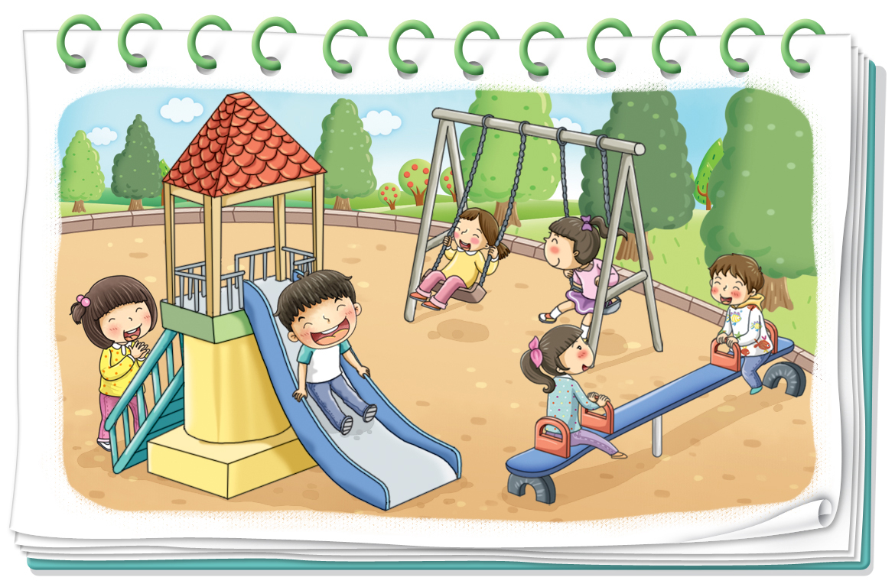

- 활동 1
- 활동 2
-
-
활동 방법
-
1놀이터 외에 내가 선택한 도덕적 가치가 필요한 다른 상황은 무엇인지 생각해 봅니다.
-
2내가 선택한 도덕적 가치가 사라진다면 어떤 일이 일어날지 상상해 보고 이야기합니다.
-
3우리 삶에 도덕이 필요한 까닭을 설명합니다.
-
-
놀이터가 ‘우정’을
느낄 수 있는 곳이면 좋겠어.
외로워하는 친구 없이
모두 즐겁고 행복했으면 해.놀이터에는
‘배려’가 꼭 필요해.
여러 친구들이 사이좋게
어울려야 하기 때문이지.놀이터에서 놀 때는
‘공정’하면 좋겠어.
그러면 다툼이 줄고
친구들 사이에
믿음도 커질 거야. -
내가 선택한 도덕적 가치는입니다.왜냐하면놀이터에 필요한 도덕적 가치는 무엇일까요?
우정
놀이터에서는 친구와 함께 놀아야 더 즐겁고 행복하기 때문입니다.
친구와 함께 어울리며 갈등을 해결하는 지혜도 배울 수 있기 때문입니다.
-
-
-
활동 방법
-
1놀이터 외에 내가 선택한 도덕적 가치가 필요한 다른 상황은 무엇인지 생각해 봅니다.
-
2내가 선택한 도덕적 가치가 사라진다면 어떤 일이 일어날지 상상해 보고 이야기합니다.
-
3우리 삶에 도덕이 필요한 까닭을 설명합니다.
-
-
놀이터에 필요한 도덕적 가치는 무엇일까요?
도덕은 사람들이 나쁜 일을 하지 않게 해서 모든 사람들이 행복하게 살 수 있기 때문에 필요합니다. 모두가 바르게 행동하면 더 좋은 세상을 만들 수 있기 때문입니다.
-